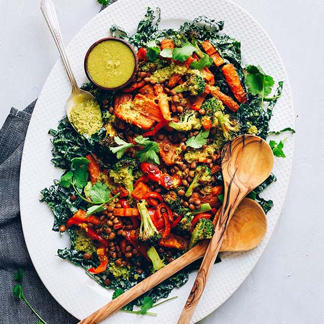
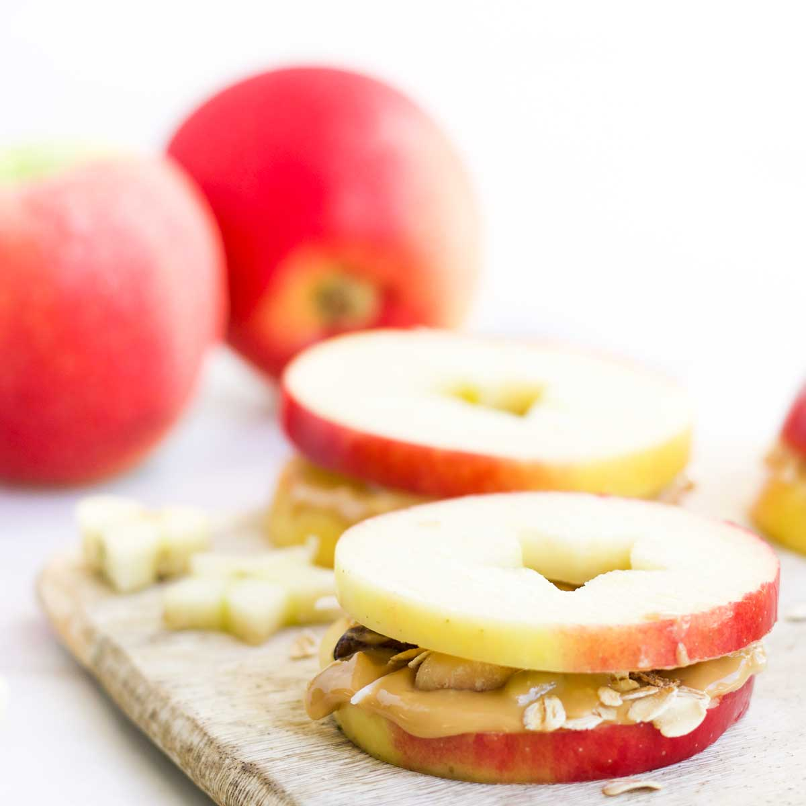
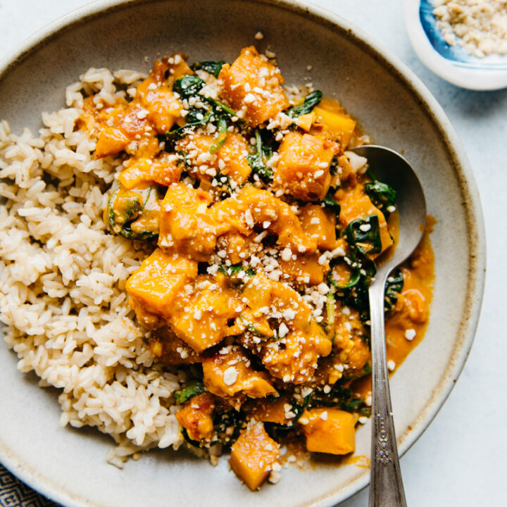
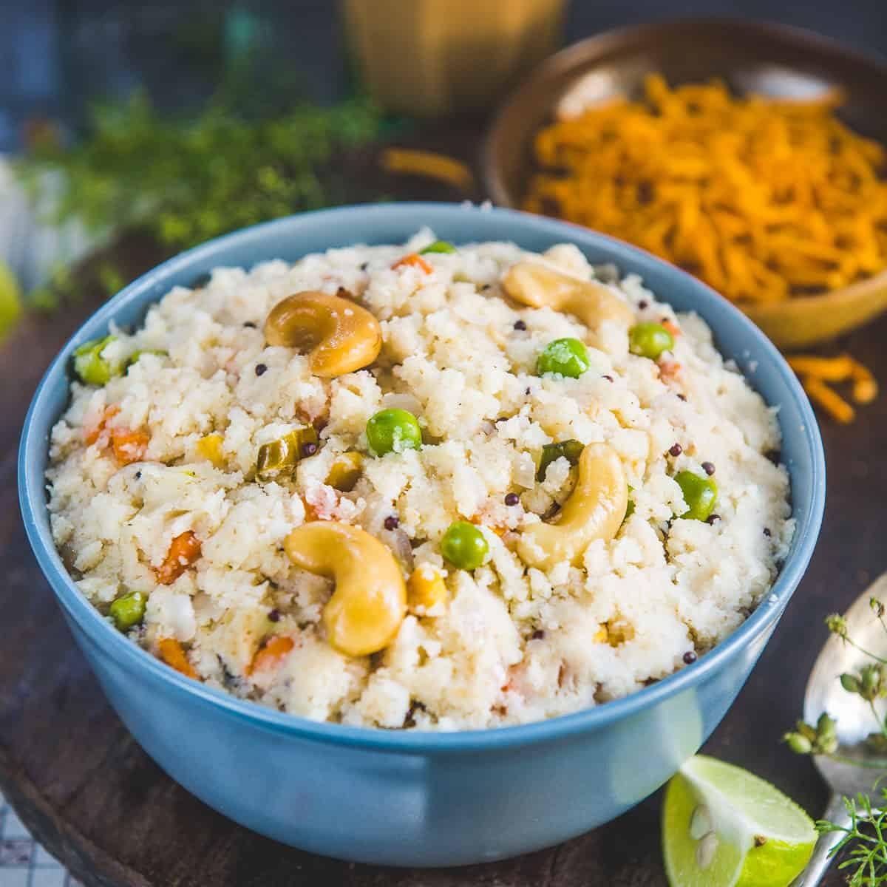
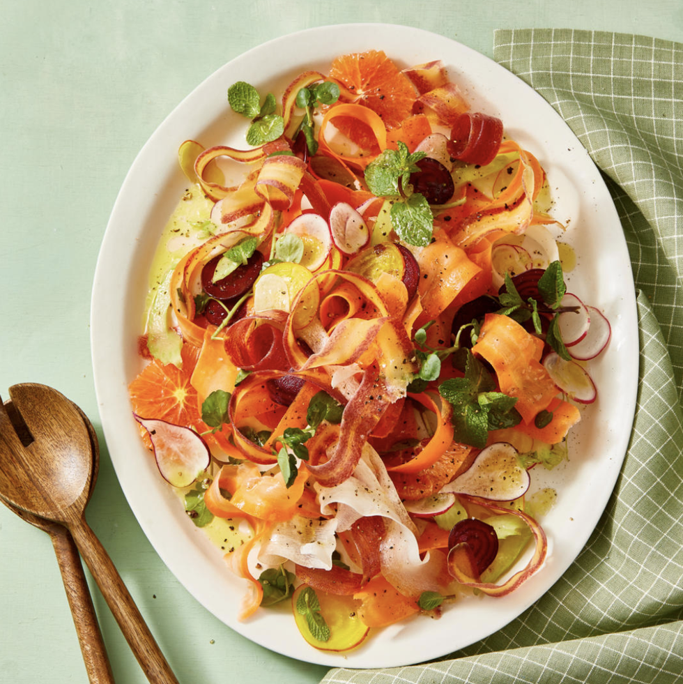
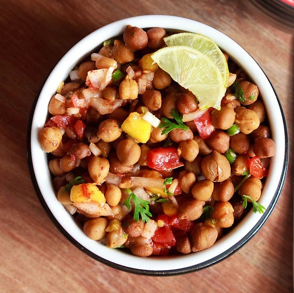
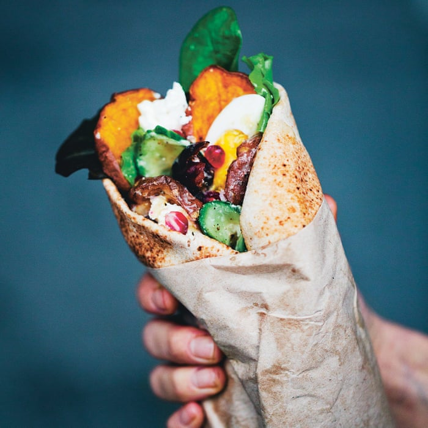

Your Perfectly Planned Diet is Here !
Day 1
BreakFast

Oat Meal
Oats are among the healthiest grains on earth.They’re a gluten-free whole grain and a great source of important vitamins, minerals, fiber and antioxidants..
Lunch
Lenti Curry Salad
When stacked up against other beans, lentils are No. 2 in protein (soybeans take top honors). When combined with a whole grain, like brown rice, they can give you the same quality of protein as meat.
Snacks
Apple with Peanut Butter
Enjoying apples with peanut butter is not only a tasty snack, but one that fuels your body with nutrients. Apples are an excellent source of fiber, while peanut butter contains protein.
Dinner
Butternut Squash Curry
Up your veg count with this fragrant, low fat vegetarian curry
Day 2
BreakFast
Rava Upma
This traditional dish involves cooking roasted rava in water that has been flavored by ghee (or oil), cashews, urad dal (lentils), chana dal (husked chickpeas), onion, ginger and additional herbs and spices.
Lunch
Shaved Carrot and Radish Salad
Who says salads need lettuce? The carrot ribbons and thinly sliced radishes in this recipe are an amazing and unexpected substitute.
Snacks
Three Bean Chaat
All you have to do is toss up some kidney beans, chickpeas and green beans, and drizzle with a light dressing of olive oil, chaat masala and lemon juice.
Dinner
potato wraps with minted yogurt
It'a very tasty and easy dish.This help-yourself veggie supper is full of fresh flavours and low-fat too